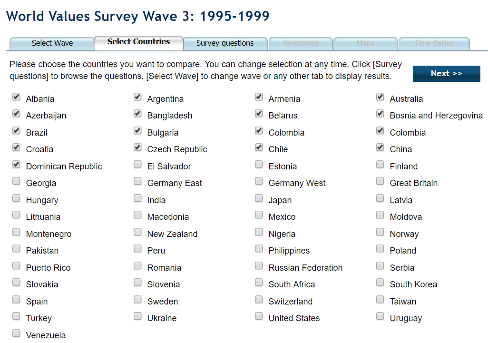

The World Values Survey is an organization which surveys people from different countries on their personal values, attitudes and engagements.
This is a visualization regarding the respondees' engagements and memberships in voluntary political and non-political organizations. Organizational memberships and engagements have been divided into categories.
The parallel coordinate system above displays the percentage of respondees from each surveyed country who regard themselves to be an active member of a voluntary organizations.
The World Values Survey is an organization which surveys people from different countries on their personal values, attitudes and engagements.
This is a visualization regarding the respondees' engagements and memberships in voluntary political and non-political organizations. Organizational memberships and engagements have been divided into categories.
The parallel coordinate system above displays the percentage of respondees from each surveyed country who regard themselves to be an active member of a voluntary organizations.
Details: Click on a name in the list of countries to display information provided by Gapminder.
Brush: Drag vertically along an axis.
Remove Brush: Tap the axis background.
Reorder Axes: Drag a label horizontally.
Invert Axis: Tap an axis label.
Remove Axis: Drag axis label to the left edge.
Adapted from examples by
Mike Bostock and Jason Davies
Copyright © 2012, Kai Chang
All rights reserved. Released under the BSD License.
For this project, I was interested in investigating the political, but also cultural climate of the countries included in the WVS. A good dataset, spanning the 4 latest documented waves of the WVS, was the one about active memberships in voluntary organizations. Sweden is a country known for its social democratic and secular views. A question which got me going, was whether I could isolate my home country, given the datasets and this previously mentioned knowledge.
For the first wave which was to be analyzed, I had to select every country one-by-one.
Labour unions are strong in social democracies. After selecting this dataset, I was presented with an overwhelming table.
Having to keep the upper row in mind, I was forced to scroll down until I found a value for Sweden.
After looking around, I found that the table could be translated into charts of different types. I found the above chart to be the most informative. However, the chart doesn’t clearly convey any real patterns. Selecting Sweden in the sorted list, only caused the bars of Sweden to be hidden. Going on analyzing later waves, or the secular views of Sweden, would force me to redo all steps.
Since I had to visualize multivariate data for this assignment, I felt the best way to go about this was using a parallel coordinate system. When a user loads the page, an overview visualization for the preselected data is displayed, all countries included.
The user can use the brushing tool to interactively isolate countries, as well as use the search bar for navigating the visualization.
The user can also deselect countries of specific continents. All continents have been color coded to produce good categorical separation. Continents can easily be compared to the sample average for every attribute.
The wave displayed can be switched using the buttons on the top of the page.
Detailed data for each country is displayed by clicking a country’s name in the searchbar interface. Data from Gapminder.
As to my initial question, I would now yet again attempt to isolate Sweden based on it’s social democratic and secular views. I use the brushing tool to select the countries from the latest wave with the most particpants in labour unions and the least participants in religious organizations. I get two hits, one of which is Sweden. Perhaps, Sweden isn’t as different from Kyrgyzstan as one would assume.
For this project, I have learned how to use and apply existing solutions and theories and adaptively use these to solve problems of my own. I have also grown to appreciate the importance of good data visualizations. If data is not made easily interpretable, much of its value is lost.
I have grown to respect the workload of data cleaning. I wouldn’t be surprised if the time spent on this project was mostly contributed to downloading XSL-files, transposing rows and columns, and calculating averages. For future projects, I would do better in writing scripts for handling the data cleaning.